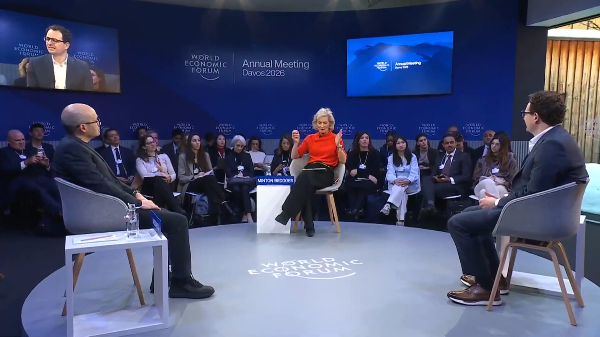

구글 딥마인드의 데미스 하사비스와 Anthropic의 다리오 아모데이가 다보스 2026에서 AGI 도달 시점을 놓고 정면으로 맞붙었습니다. 아모데이는 1~2년, 하사비스는 5~10년이 걸린다고 주장했습니다.
두 사람은 'AI가 AI를 만드는 루프'를 가장 중요한 변곡점으로 꼽는 데 의견을 같이했습니다. 화이트칼라 일자리의 절반이 5년 안에 사라질 수 있다는 경고도 함께 나왔습니다.
양측 모두 "느린 쪽이 세상에 더 낫다"고 인정하면서도, 감속은 이미 불가능하다고 봤습니다. 경영 리더에게 남은 선택지는 속도가 아니라 방향입니다.
AGI가 1년 뒤에 온다는 사람과 10년 뒤라는 사람이 같은 무대에 섰습니다.
둘 다 "느려졌으면 좋겠다"고 했습니다. 당신은 아직 "우리 회사엔 상관없는 일"이라고 생각하고 있습니까?
AI 산업을 이끄는 두 회사의 CEO가 같은 무대에 올랐습니다. 주제는 "AGI 이후의 세계"였고, 의견은 갈렸지만 두 사람이 내린 결론은 하나로 모였습니다. "이미 늦었다." 경영 리더가 이 토론에서 읽어야 할 것은 기술 예측이 아니라 행동의 긴급성입니다.
2026년 1월 21일, 다보스 세계경제포럼 무대에 두 사람이 함께 올랐습니다. 구글 딥마인드 CEO 데미스 하사비스와 Anthropic CEO 다리오 아모데이입니다. 주제는 "AGI 이후의 세계"였으며, AI 업계를 양분하는 두 거인이 한 자리에 선 것 자체가 이례적인 사건이었습니다.
Anthropic은 2023년 사실상 매출이 전무하던 상태에서 2025년에는 100억 달러 규모로 성장했습니다. 구글 딥마인드는 Gemini 3 개발에 박차를 가하고 있습니다. 두 기업 모두 수조 달러를 쏟아붓고 있습니다. 이 토론은 단순한 기술 전망이 아니라, 산업 전체의 방향을 가리키는 신호입니다.
첫째, AGI 도달 시점의 차이가 경영 전략의 시간표를 바꿉니다. 아모데이는 "1~2년이면 AI가 모든 영역에서 인간을 넘어선다"고 했습니다. 반면 하사비스는 "5~10년은 걸린다"고 봤습니다. 그는 "지금 모델 구조로는 부족하다, 돌파구가 1~2개 더 필요하다"고 덧붙였습니다. 누가 맞든 기업이 준비할 시간은 최대 10년, 최소 1년입니다.
둘째, 두 사람이 유일하게 의견 일치를 본 지점도 있었습니다. "AI가 AI를 만드는 루프"가 핵심 변곡점이라는 것입니다. 아모데이는 "이 루프가 닫히면 수개월 안에 경이로운 일과 위기가 동시에 온다"고 했습니다. 하사비스도 "가장 주시해야 할 신호"라고 동의했습니다. 이 루프가 닫히는 순간, AI의 발전 속도는 인간이 통제할 수 있는 범위를 넘어서게 됩니다.
셋째, 코딩 자동화가 6~12개월 앞으로 다가왔습니다. 아모데이는 "Anthropic 엔지니어들은 이미 직접 코드를 쓰지 않는다"고 밝혔습니다. 코딩 자동화가 확산되면 모든 산업의 디지털 전환 비용과 속도가 달라집니다.
넷째, 양측 모두 "느린 쪽이 더 낫다"고 인정했습니다. 아모데이는 "솔직히 하사비스의 타임라인이 더 낫겠다"고 했습니다. 하사비스도 "느린 속도가 세상에 더 좋다"고 동의했습니다. 그런데 두 사람 모두 감속은 불가능하다고 봤습니다. 메시지는 명확합니다. 속도를 통제할 수 없다면, 방향을 선택해야 합니다.
초급 화이트칼라 일자리의 절반이 위협받고 있습니다. 아모데이는 "1~5년 안에 사라질 수 있다"고 했습니다. Cognizant 리서치에 따르면, 현재 AI 기술만으로도 미국 노동 생산성에서 약 4.5조 달러의 잠재 가치를 끌어낼 수 있습니다. 이 전환을 준비하지 않는 조직은 인건비와 생산성 양쪽에서 뒤처지게 됩니다.
주니어 채용 전략이 근본부터 바뀝니다. 아모데이는 "주니어 직원을 더 적게 뽑게 될 것"이라고 했습니다. 하사비스는 "대학생이라면 이 도구에 압도적으로 능숙해져야 한다"고 조언했습니다. 인력 구조가 먼저 변하고, 조직 재설계가 뒤따릅니다. 이 순서를 미리 아는 기업만 전환 비용을 줄일 수 있습니다.
팀별로 주 5회 이상 반복되는 업무를 정리합니다. 입력과 출력이 명확한 업무부터 표시합니다. (팀장 주도, 1시간)
현재 주니어 인력이 담당하는 업무 중, AI 도구(Claude, ChatGPT, Copilot)로 대체 가능한 범위를 측정합니다. "대체율 50% 이상"인 직무를 우선 파일럿 대상으로 선정합니다. (HR + 팀장, 2시간)
아모데이가 말한 "엔지니어가 직접 코드를 쓰지 않는" 상황을 파일럿합니다. Claude Code, GitHub Copilot 등을 1개 프로젝트에 적용하고, 생산성 변화를 2주간 측정합니다. (CTO/개발 리드, 2주)
다보스 토론 원본(48분)을 임원 미팅 사전 자료로 배포합니다. 토론 주제: "아모데이의 1~2년 시나리오가 현실이 되면, 우리 사업에 가장 먼저 영향받는 영역은 어디인가?" (15분 배포 + 30분 토론)
타임라인 예측에는 이해관계가 섞여 있습니다. 아모데이는 Anthropic CEO이고, 하사비스는 구글 딥마인드 CEO입니다. 두 사람 모두 자사 기술의 가치를 높여야 하는 위치에 있습니다. AGI 타임라인은 기술 전망인 동시에 투자와 인재를 끌어오는 메시지입니다. 한쪽 전망에 올인하지 말고 교차 검증이 필요합니다.
일자리 소멸 전망은 "가능성"이지 "확정"이 아닙니다. 아모데이의 "화이트칼라 50% 소멸" 예측은 기술적 가능성을 말한 것입니다. 고용 시장의 법적, 제도적, 문화적 저항은 반영되지 않았습니다. 준비는 하되, 공포에 기반한 구조조정은 자제해야 합니다.
AGI의 정의 자체가 다릅니다. 하사비스는 "인간 최고 수준의 창의성을 포함한 모든 인지 능력"이라 정의했습니다. 아모데이는 "모든 영역에서 인간을 넘어서는 시스템"이라 봤습니다. 같은 단어를 다른 뜻으로 쓰고 있습니다. 경영 전략에 AGI를 반영하려면 정의부터 명확히 해야 합니다.
AGI가 1년 뒤에 오든 10년 뒤에 오든, 두 거인이 합의한 것은 하나입니다. "속도를 멈출 수 없다면, 방향을 선택하라."
- DRM News. "FULL DISCUSSION: Google's Demis Hassabis, Anthropic's Dario Amodei Debate the World After AGI | AI1G", YouTube, January 21, 2026. https://www.youtube.com/watch?v=02YLwsCKUww
- Fortune. "AI luminaries at Davos clash over how close human-level intelligence really is", January 23, 2026. fortune.com
- Cognizant Research. "AI and US Labor Productivity", 2025.